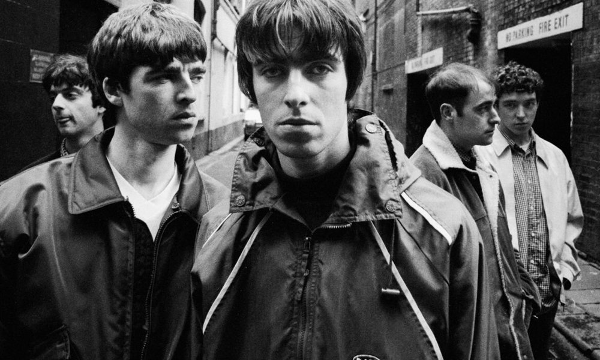
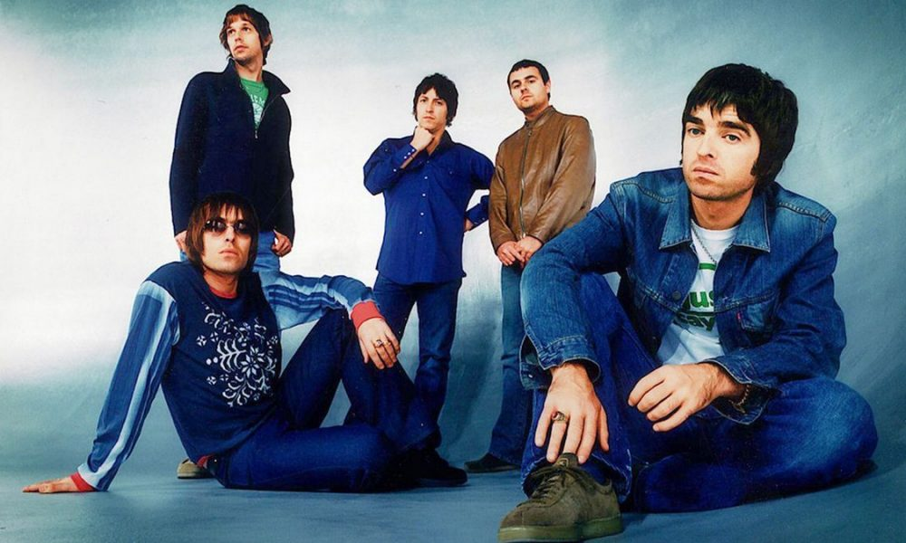
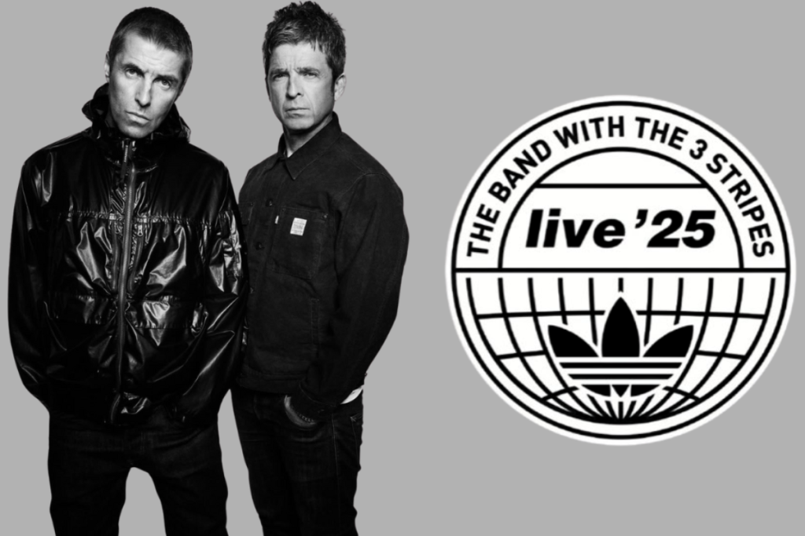

Historia

Los comienzos de Oasis
La historia de Oasis comienza en Manchester, Inglaterra, en los años 90. Los hermanos Gallagher, Noel y Liam, formaron la banda que revolucionó el britpop y el rock británico. Desde sus primeros pasos como The Rain hasta convertirse en Oasis, la banda se destacó por su actitud, letras y sonido único.
El salto a la fama
Oasis alcanzó la fama mundial con el álbum "Definitely Maybe" en 1994, seguido por "What's the Story) Morning Glory?" en 1995. Canciones como Live Forever y Wonderwall se convirtieron en himnos del britpop y consolidaron a Oasis como una de las bandas más influyentes del Reino Unido.


El legado de Oasis
A pesar de su separación, el legado de Oasis sigue vivo en la música y en sus fans. La banda dejó una huella imborrable en la historia del rock británico y continúa inspirando a nuevas generaciones con su actitud, energía y clásicos inolvidables.